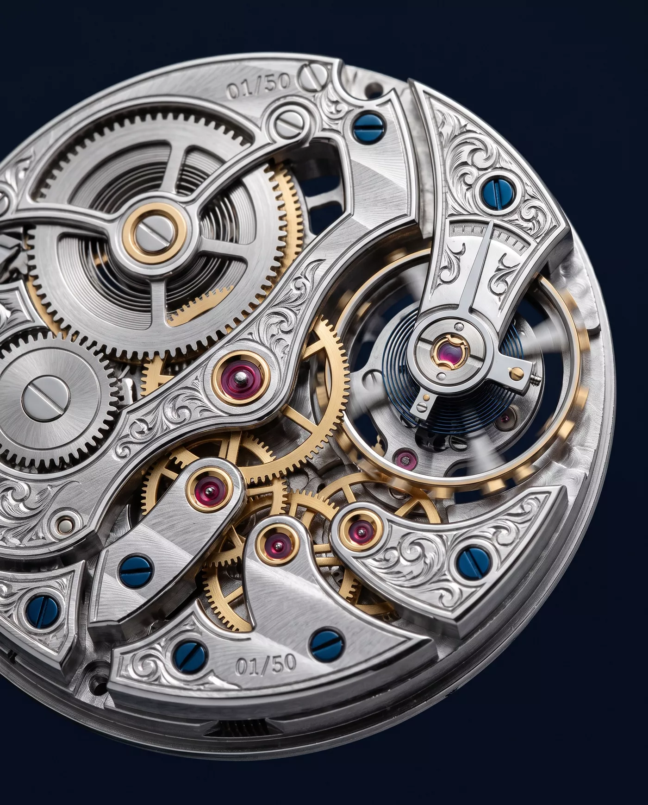

Manufacture d'Horlogerie
Calibre ORB‑01 · Gyroscopic Tourbillon · Est. 1987
01 — Craft Philosophy
Every ORBITA movement begins as raw German silver and ends, eleven months later, under the loupe of a single finisher. No component leaves the bench until its anglage catches light along the full length of every edge.
We build forty-nine movements a year. Not because demand stops there — because the hand does. Chamfering one bridge takes a full day. The gyroscopic carriage alone carries 89 components, each bevelled, black-polished and inspected at thirty-fold magnification before assembly is permitted to begin.
“A watch that merely tells the time is a calculator. A watch that holds it is an instrument.”
02 — The Movement
A movement conceived around a single obsession: cancelling gravity. The regulating organ rides inside a bi-axial gyroscopic carriage, completing one full rotation every sixty seconds on the first axis and every four minutes on the second.
Grade-5 titanium cage, 0.41 g complete. Averages positional error across all orientations of the wrist, in constant motion.
Beating at 25,200 vibrations per hour with inertia blocks in place of an index — regulation by mass, not by friction.
Wound in series for a flat torque curve across all 96 hours of reserve. The final hour keeps rate as faithfully as the first.
Black polish on the carriage bridge, Geneva stripes at 45 degrees, and 227 interior angles — each one impossible by machine.
03 — The Calibre in Macro
Photographed at four-to-one magnification, bridge side. Skeletonised German-silver bridges, screws blued at 290 °C over an open flame, forty-three ruby jewels. The plate is uncovered the way a rate is read at the bench — one full sweep of the hand.

N° 01 — hand-engraved · atelier no. 1
04 — Specifications
Read the movement the way its makers do — as a set of tolerances, each one a promise.
| Calibre | ORB‑01, manual winding / in‑house |
|---|---|
| Dimensions | 38.60 × 10.20 mm |
| Frequency | 3.5 Hz · 25,200 vph |
| Power reserve | 96 h / twin barrels in series |
| Carriage rotation | 60 s · 240 s / axis I · axis II |
| Components | 312 · 43 jewels |
| Observed rate | ±0.8 s/day / 21‑day observatory trial |
| Case | 40.5 mm / 904L steel or 5N gold |
| Water resistance | 50 m · 5 bar |
| Crystal | Domed sapphire, AR both faces |
05 — Limited Edition
Pieces · worldwide · ever
The first series of the ORB‑01 is limited to forty-nine pieces — one for each movement the atelier can finish in a year. Each caseback is hand-engraved with its number, the finisher's initials, and the observatory rate it recorded on its final day of trial.
Request an audience